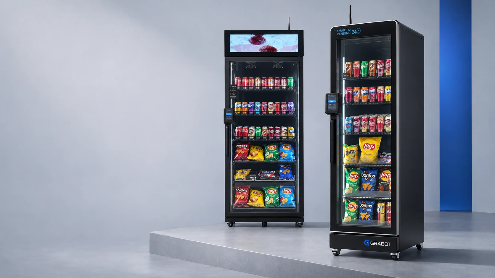
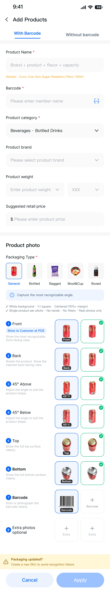

PRECISION RESTOCK
看清，再补货。
商品卡片 / 库存比例 / 分层选择
突出库存与选择状态
精细化补货
一台售货机背后，是设备状态、商品资料、货架陈列、补货作业与订单数据。EZvend 将这些日常任务汇集在移动端，让运营人员从了解现状，到执行操作，都有清楚的入口。

设计关注
首页把经营数据、待处理事项与常用操作分组；设备列表通过在线、离线、缺货与停售区分状态。让“需要关注什么”和“接下来做什么”，在同一个产品里衔接起来。
数据、提醒与操作，
各自占据清楚的位置。
用分组和状态筛选，
缩小当前的关注范围。
业务数据 · 设备状态 · 订单
商品资料 · 货架配置 · 模板
模式选择 · 库存调整 · 确认
补货模式 · 时间 · 商品变更
在需要逐项核对时，突出商品、货架与库存状态；在需要快速调整时，把数量操作放到列表中。设计通过两种路径，回应不同的补货需求。
商品卡片 / 库存比例 / 分层选择
紧凑列表 / 数量编辑 / 补前对照
精细化模式用商品卡片支持识别和选择，快捷模式用紧凑列表承载连续的数量编辑。
库存比例、低库存提示、补前数量与差值，各自服务于当前需要做出的判断。
补货记录保留模式、设备、时间与商品变更信息，将作业结果接回运营管理。
记录中的 Precision Restock / Quick Restock 与入口的两种模式保持一致，帮助使用者辨认作业方式。
陈列配置可以来自已有设备，也可以来自保存的模板。把“从哪里导入”“是否适配”“会产生什么影响”分开说明，让复用与确认都有依据。
From Device 与 From Template 分别承载两类来源；搜索与卡片选择帮助用户定位已有配置。
点击查看不同设计环节让高频配置能够复用，也让重要变更在执行前被理解。
面对不同包装，单靠一段文字难以说明图片要求。设计将包装类型、拍摄角度与正反示例放在一起，让用户在上传前知道什么样的图片符合要求。

先选择包装类型，再查看对应商品示例。六个拍摄角度之后，继续承接条码图片与可选补充图片。
要求出现在需要它的位置。
白色背景、1:1 画幅、单件商品与留白规则，就近呈现在照片区域。
通用、瓶装、袋装、杯碗与盒装，使用匹配包装类型的参照图片。
用正反示例、完成勾选与待添加位置，让资料准备过程更容易检查。
以统一的颜色语义、文字层级和组件样式承接持续迭代。设备、订单、商品与补货页面，在不同任务里保持可辨识的视觉语言。
PingFang SC标题 · 正文 · 辅助信息
项目中保留组件、变量组件库与 Design Guidelines，支持新需求沿用已有规则。
走查记录聚焦字号、字重、图标、颜色与边界。用具体标注描述问题，让实现有明确的核对依据。
标题字号与字重、价格和辅助文字颜色
图标替换、按钮状态、卡片描边
间距、分割线、对齐和底部操作区域
我关注业务怎样被理解，也关注设计怎样被准确实现。
在 EZvend 中，把任务结构、操作状态和界面规则串起来，
是贯穿设计工作的同一个目标。
从经营概览到现场作业，以一致的界面连接日常运营。点击任意界面，可放大查看完整设计。
界面来自 EZvend 设计文件；界面内的业务数据为设计稿展示内容。